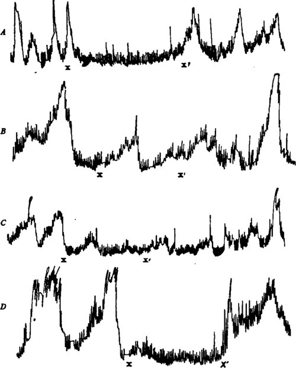
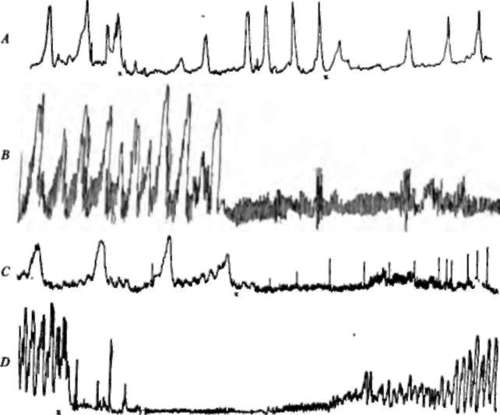

The Action Of Water
Description
This section is from the book "The Control Of Hunger In Health And Disease", by Anton Julius Carlson. Also available from Amazon: The Control of Hunger in Health and Disease.
The Action Of Water
Water, at body temperature, or nearly ice cold, inhibits the tonus and the hunger contractions of the stomach. The inhibition following the introduction of a glass of water (100 to 200 c.c.) directly into the stomach lasts on the whole only 3 to 5 minutes, and is never followed by any augmentation of the tonus or the hunger contractions. The cold water causes greater inhibition than the water at body temperature. If the water is introduced into the stomach during very intense hunger contractions ("hunger tetanus"), there may be no perceptible inhibition. In other words, the degree of inhibition by water in the stomach is inversely proportional to the intensity of the hunger contractions present at the time the water is introduced. Water, warm or cold, introduced directly into the stomach during the period of relative relaxation and quiescence does not increase tonus or initiate a contraction period.
The statement that cold water causes on the whole greater inhibition than water at body temperature requires the following qualification. The record of the stomach movements was taken by means of an air-inflated balloon in the stomach cavity. Now, when cold water is introduced the water surrounds the balloon, at least partly, and cools the air in the balloon. This itself will lower the tension somewhat, until the temperature is restored to that of the body by the warming of the water or by the passing of the water into the intestine. We do not think that this is a serious source of error for this reason. A few experiments were made with water at 500 C. This causes greater inhibition than when the water is at 380 C. Water at 50° C. will, of course, increase the air tension in the balloon, yet the inhibition of the stomach tonus and movements is sufficiently marked to mask the effect of slight warming of the air.
Fig. 18.-Records of gastric hunger contractions of Mr. V. A, at x a tcaspoonful of sugar was put in the mouth; at X' the sugar was rinsed out with warm water; showing inhibition of the stomach contractions by stimulation of end organs for the sense of sweetness. One-half original size. B, at X a teaspoonful of table salt was put in the mouth; at X' the salt was rinsed out with warm water; showing inhibition of the stomach contractions. One-half original size. (."', at A" 15 c.c. weak acetic acid was put in the mouth; at X' the mouth was rinsed with warm water; showing inhibition of the stomach contractions. One-third original size. D, X-X', vigorous chewing of paraffin; showing inhibition of the hunger contractions of the stomach by chewing indifferent substances.
Flg. 19.-A, record of the contractions of the empty stomach of Mr. V. At X 100 c.c. cold water introduced directly into the stomach; showing the temporary inhibition. About two-thirds original size. B, records from the empty stomach of A. J. C. At X introduction of 15 c.c. brandy in 25 c.c. warm water directly into the stomach; showing the alcohol inhibition of the hunger contractions. C, record of the contractions of the empty stomach of Mr. V. At X 25 c.c. of human gastric juice (V.'s own gastric juice, psychic secretion, secured 2 hours previously) introduced into the stomach; showing the acid inhibition. About one-half original size. D, record from the empty stomach of dog with gastric fistula. At X 25 c.c. of 0.5 per cent HCl (warm) introduced directly into stomach; showing the prolonged acid inhibition, with gradual recovery. Total time of the part of the tracing reproduced, 30 minutes. About one-half original size.
How does water in the stomach produce this temporary inhibition ? It goes without saying that in these experiments the water was not introduced fast enough to cause contractions by distension of the stomach wall, although this occurred unavoidably in a few instances. The only possible ways that water at body temperature can stimulate the nerve-endings in the mucosa seem to be (1) by mechanical pressure, (2) by osmosis, or (3) by changing the chemical equilibrium of the content of the stomach. Cessation of the inhibition probably marks the passing of the water out of the stomach into the intestine or the addition of sufficient salts to prevent stimulation by hypotonicity. The greater inhibitory action by cold water and by water above the body temperature is evidently to stimulation of the protopathic temperature nerve-endings in addition to those acted on by pressure and osmosis.
It is clear that the action of water on the stomach mucosa is in the direction of inhibition of the hunger contraction. How can this be reconciled with the view that a glass of cold water induces or augments hunger ? It is to be remembered that in these experiments the water had no chance to act on the nerve-endings in the mouth and the esophagus. The alleged action of cold drinks on hunger and appetite is probably the reflex effects (cold) from the mouth and esophagus. In the writer's own case a glass of ice water causes increased muscular tonus,- sometimes even to the point of shivering and formication. This increased kinesthetic sense probably acts in the way of Bahnung for the hunger sensation, if it is not actually a part of the hunger complex. Cannon and Wash-burne suggest that the effect of a cold drink on the hunger sensation is due to "the power of cold to induce contraction in smooth muscle." Although their meaning is not clear to us, they probably have in mind the contraction of the stomach musculature. This could not come about'by the cold acting on the stomach musculature directly. The reflex effects of cold water from the mouth and esophagus are very complicated as regards the stomach, while cold water acting on the gastric mucosa directly causes inhibition, and cooling the frog's stomach causes depression and atony in proportion to the degree of cooling.
Continue to:
- prev: 4. Primary Automaticity Of The Local Neuromuscular Mechanism Of The Stomach
- Table of Contents
- next: The Action Of Acids